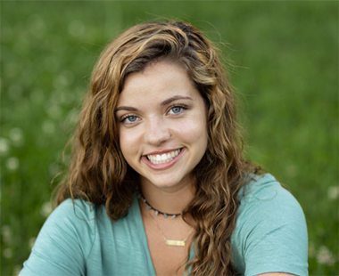

Emery Hasenstab

Education
SCHOOL OF MEDIA ARTS AND DESIGN, James Madison University
Harrisonburg, VA
August 2021-May 2024
Bachelor of Arts, Media Arts and Design
Concentration: Creative Advertising
Minor: General Business
Awards: Dean's List (multiple recipient)
GPA: 3.488 overall GPA
Experience
CENTRAL VIRGINIA SOCCER REFEREE ASSOCIATION
Webmaster
Summer 2023-present
Create website directed toward youth referees to recruit & support youth officials.
- Write and create content on website
- Design interface in an engaging and accessible style
- Communicate with CVSRA staff
- Develop freelance experience
SCRATCHPAD
Copywriter
Fall 2022-present
Collaborate with fellow copywriters to create eye catching and clever campaigns & member biographies.
- Brainstorm big ideas for campaigns
- Work collaboratively with art directors to convey cohesive messages
- Complete passion projects to sharpen writing skills
- Produce work for National Student Advertising Competition
STILL MEADOWS ENRICHMENT CENTER AND CAMP
Student Marketing Representative
Fall 2023-present
Collaborate with fellow representatives to create marketing initiatives to attract donors.
- Develop professional skills through working alongside president of the nonprofit
- Create events to attract donors through collaboration with other local nonprofit organizations
- Complete marketing plan and presentation to show new ideas
CENTRAL VIRGINIA REFEREE ASSOCIATION & SHENANDOAH SOCCER OFFICIALS ASSOCIATION
Youth Soccer Referee
Spring 2016/2022-present
Manage player safety, tempers, & time while allowing players to enjoy learning the game.
- Referee youth soccer in both the central and assistant referee positions
- Encourage fair play among players
- Serve as role model to younger athletes, as well as a mentor for new referees
- In process of obtaining permission to referee collegiately
- Featured subject in Richmond Times Dispatch article about high-level referees (6/23)
Other
LANGUAGES:English, Spanish
LEADERSHIP:Copywriter in scratchpad
SKILLS:Figma, Adobe Photoshop, Adobe Illustrator, Wordpress, Squarespace
ATTRIBUTED:Strong leadership skills, team player, curious learner
ACTIVITIES:JMU Women's Club Soccer, scratchpad, volunteer at Rockingham SPCA, intramural soccer
INTERESTS:Animals, fitness, soccer, nature